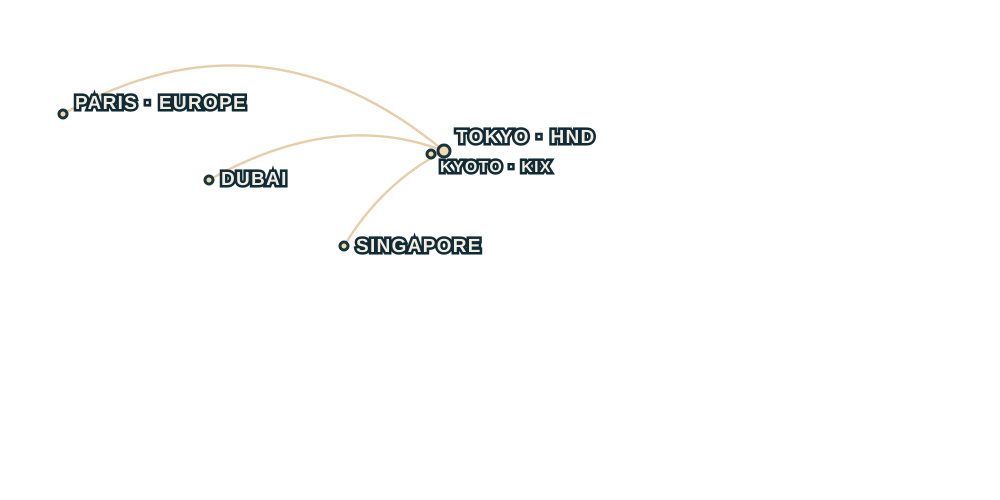

CULTURE · CRAFT · QUIET MOMENTS
Traditional Japan
Take the slower streets through temple gardens, old town lanes, and the rituals that make each day feel distinct.
TSUKI: JOURNEYS
Flight, stay, transfers, and thoughtful plans for the days in between. Find a new way to see Japan, Dubai, Singapore, and Europe.

Each Tsuki: Journeys package brings the pieces together, so you can spend more time being there.
Take the slower streets through temple gardens, old town lanes, and the rituals that make each day feel distinct.
A seven-day city escape, with Premium Economy flights and the details of your stay and daily plans thoughtfully arranged.
Find the many sides of one island city, from hawker tables and hidden lanes to a softer hour by the water.
A seven-day European trip with Business Class flights, considered stays, and a carefully paced itinerary.
Choose the trip length and stay that fit. Your plan includes a day-by-day route through the destination’s landmarks.
Start with the essentials, then choose the level of comfort and care that suits your trip.
Economy Class
A thoughtful starting point with a Tsuki flight, a welcoming hotel stay, airport transfers, and a flexible destination guide.
Premium Economy
More space for the journey, with a handpicked stay, smooth transfers, and experiences shaped around the destination.
Business Class
Travel in comfort from the first flight to the final transfer, with considered stays and a complete itinerary to follow.
First Class
First Class flights, exceptional resort stays, private chauffeured transfers, and signature experiences at every stop.
Package prices and named stays are planning information. This website does not book flights, hotels, or payments.
Journey itineraries and hotel selections are planning information. Reservations and payments are not processed here.